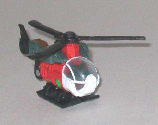
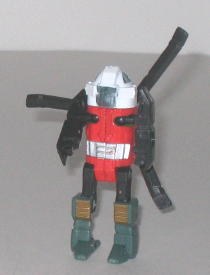
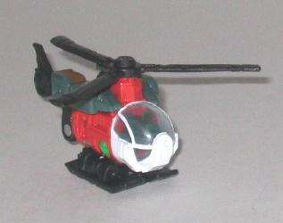
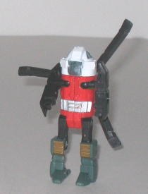
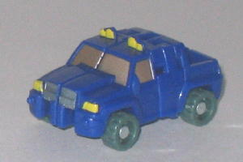
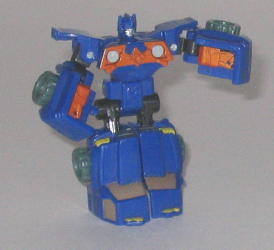
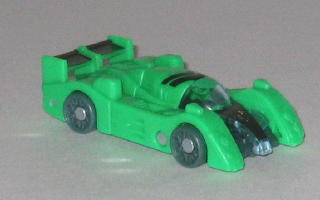
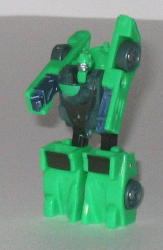

Jolt
Jolt
 
Difficulty of Transformation : Very Easy
Color Scheme : Black, orange-red, white, dark flat military green, transparent light blue, and some silver and dull gold
Individual Rating : 6.7
Recon
Team
Allegiance
: Minicon
Size
: Mini-Con (3-pack)
Homeworld
: None
Secret Code to unlock content on Transformers.com
:
sh26
Overall Rating
: 7.1
Jolt


Difficulty of Transformation
: Very
Easy
Color Scheme
: Black, orange-red,
white, dark flat military green, transparent light blue, and some silver
and dull gold
Individual Rating
: 6.7
Jolt's alternate mode
is a rescue helicopter. It's a pretty good mode, overall-- the only real
complaint I have about it is that the green bits on top a bit too obviously
Jolt's robot legs. The proportions are reasonable if it's supposed to be
a small-scale helicopter, and the mold detailing is quite good for such
a small toy-- there's even some mechanical detailing on the tiny propellers,
a seat molded inside the transparent cockpit, and a little turbine molded
into the tail fin! The propeller itself spins very smoothly, so no worries
about resistance here. The color scheme seems to be a big of a mish-mash
of various colors, though-- green, orange, black, and white don't go particularly
well together. But still, that aside, a solid vehicle mode. (Oh, and in
case you're wondering, the Minicon port is on the bottom of the left landing
skid, and the Minicon symbol is on the left side on the main body, under
the robot leg piece.)
Jolt's robot mode isn't
as good as his vehicle mode, however. My main beef is that his face looks
absolutely ridiculous-- it's hidden inside the big bulbous helicopter cockpit,
with only a transparent window to let you see what the head actually
looks like (at the time I took the above pictures, however, I did not realize
Jolt's "scuba helmet" could turn around so the large clear part was in
front of his head, thus making it much easier to see his robot head). The
whole getup makes him look like some weird scuba diver from several decades
ago. His helicopter tail just kind hangs off his backside, too, not really
tucking anywhere and getting in the way of his propeller being able to
spin. His arms and legs look pretty decent and are nicely proportioned,
however. Jolt's articulation is decent for a Minicon-- he can move at the
shoulders (on ball joints), and at the hips and knees-- but that's it,
so it could definitely be improved a little.
Jolt's vehicle mode
is pretty nice, but his color scheme and robot mode are pretty so-so. My
least favorite of the Recon Minicons.
Reverb


Difficulty of Transformation
: Very
Easy
Color Scheme
: Dark blue, silver,
flat dull orange, and some dull bluish green, black, and dull greenish
yellow
Individual Rating
: 7.5
Reverb's vehicle mode
is a SUV/truck hybrid. This mode is pretty nice, with good proportions
for a Minicon. The dark blue color scheme works pretty well, though the
orange, silver, and yellow help to offset the dark blue some to make the
scheme more interesting. I'm not too crazy about the bluish green tires,
however-- that seems a really weird color choice for tires. Another minor
complaint about this mode is that the robot hands molded into the truck
bed of the vehicle wouldn't have been obvious, IF they weren't painted
orange against the surrounding blue plastic. It's one of the few times
where less paint detailing on a piece would have been preferable. As it
is, it's a bit of an eyesore when looking at the vehicle from a rear few,
as the fists are right THERE. But that bit aside, it's quite a good, solid
vehicle mode, with no other extras. The mold and paint detailing, although
not something to write home about, are still good enough for such a small
toy. Reverb's Minicon port is on the underside of this mode, to the rear
and to the right of center.
Reverb's robot mode
is pretty cool, and given his unique transformation, it gives the mode
a bit of a unique look, too. Yeah, the front half of the vehicle becomes
his feet, which is hardly original, but the chest area looks pretty nice,
and it's actually formed out of a wall of the truck bed, which is kind
cool. It has the Minicon symbol molded into the center of it, as well.
The doors of the vehicle mode also form the shoulder panels, which is another
nice touch, though I'm not too crazy about having the halves of the truck
bed form the lower arms. They're definitely too bulky, and the fists are
merely molded onto said truck bed halves instead of actually being real
fists. The molding done on Reverb's face also looks a little dorky, as
his nose is way too bit. Also, Reverb's arm articulation is somewhat limited--
he can move side-to-side at the shoulders and forward at the elbows, but
that's it. He has normal front-and-back articulation at the knees and hips,
however.
Reverb has a few problems
with his robot arm pieces in both modes, but otherwise he's a fairly good
Minicon. My favorite of the Recon Team.
Six-Speed


Difficulty of Transformation
: Very
Easy
Color Scheme
: Soft green, dull bluish
green, and some black, transparent light blue, metallic silvery blue, metallic
gunmetal gray, and silver
Individual Rating
: 7.3
Six-Speed's vehicle mode
is a race car, and it's a pretty flawless vehicle mode. Good mold detailing,
a reasonable amount of paint detailing, good proportions, transparent windows
(a real achievement for a Minicon), and no robot extras to speak of. Everything
is flawless, that is, except for his color scheme. This color of green
isn't a bad color scheme per se (it's actually a lot more palatable than
it looks in the pics above-- this green looks vastly more icky under camera
light), but it looks completely out of place on a race car. He also has
those same oddly bluish-green tires that Reverb does. The gunmetal gray
used for an accent color looks very nice, though. His Minicon port is on
the underside of the mode, slightly to the rear of center, and his Minicon
symbol is on the front hood, smack dab in the center of it.
Six-Speed's robot mode
lacks a bit of originality, as it's basically just folding his back half
out to become legs and then folding down his chest, but at least it's a
halfway decent design he's copied. The shoulders are absurdly large, and
I wish the upper legs weren't so tiny when compared to the lower legs.
His head is a also a bit too small, and I think the "bar" molded across
his nose looks a bit goofy, but otherwise he looks pretty decent. The partially
transparent race-car chest looks good on him, especially. His articulation
is average for a Minicon's-- he can move back-and-forth at the shoulders,
hips, and knees, and his head can look up or down a little.
Six-Speed has a few
proportion problems in his robot mode, and his color scheme doesn't fit
a race car at all, but his vehicle mode is pretty much flawless. He's not
the best Minicon there is, but he's far from the worst.
The Recon Minicon Team is about average as Minicon teams go-- none of the members stick out as being particularly awesome, but none of them are really horrible either. Recommended if you like the little Transformers-- otherwise, some other Scouts like Clocker and Ransack probably deserve your attention first.
Review by Beastbot